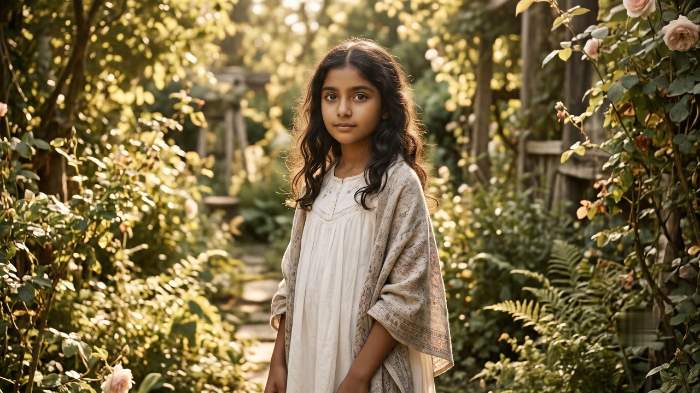
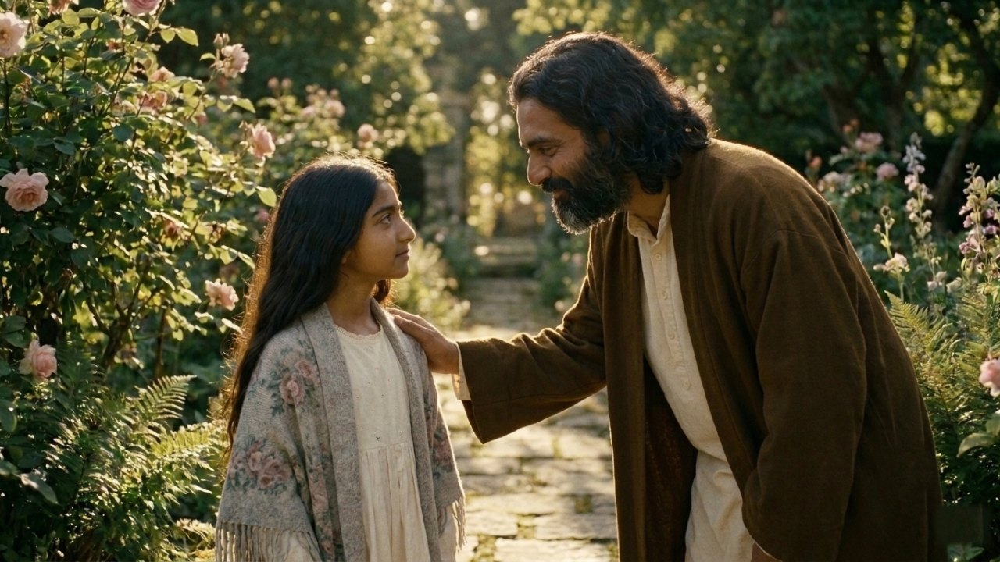
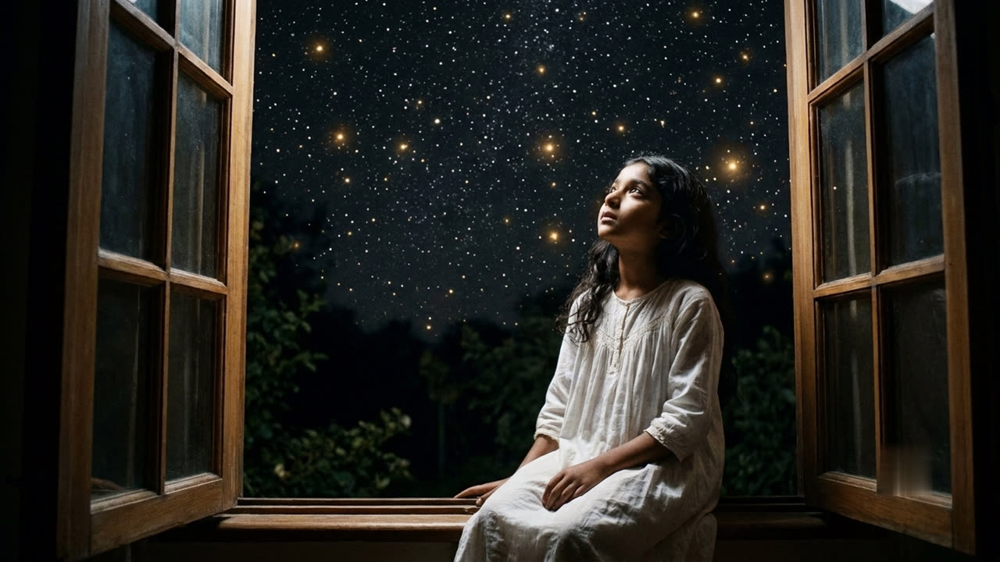
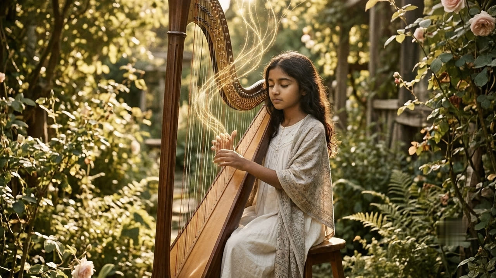
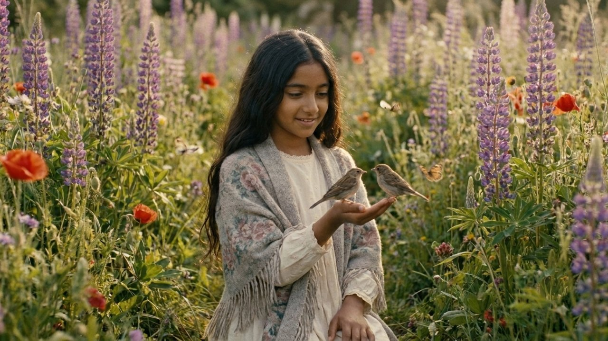
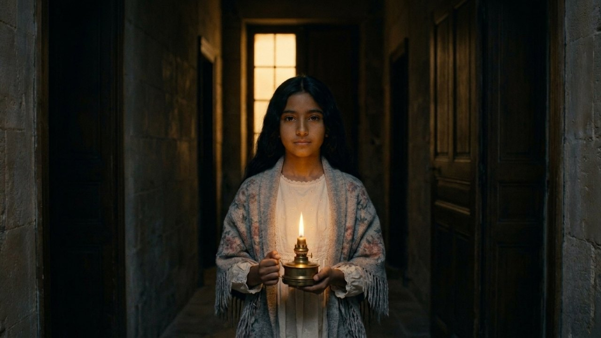
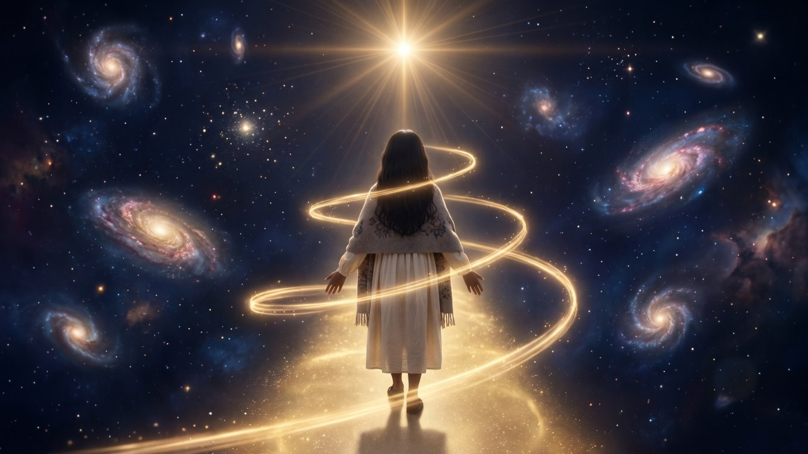

NOOR
A Musical Journey into the Light
A short film on the spiritual life and courage of Pirzadi Noor-un-Nisa Inayat Khan
Watch the TrailerOfficial Trailer
Her name… was Light
The Film
A film that tunes in to her soul
She was a child who listened to the silence.
NOOR is a short film: a musical treatise on the spiritual life and quiet courage of Pirzadi Noor-un-Nisa Inayat Khan. Rather than retelling events, it tunes in to her soul, to the stillness she listened to as a child, the music she offered as prayer, and the inner light that would one day become her courage.
Raised in a garden house outside Paris by her father, the Sufi master and musician Hazrat Inayat Khan, she listened to the wind as if it were a teacher, played the harp and the veena as though in prayer, and wrote stories of compassion. Told through voice, music and light, the film follows that inner journey: a soul opening to the Light, and the fearless heart that Light gave her.

The Meaning of Her Name
“God is the Light of the heavens and the earth.”
Qur’an 24:35 · Ayat an-Nur
Noor — or Nur — is the pure cosmic Light that emanates from the One and spreads through all the universe. The film begins and ends in that Light: a single point in the darkness that becomes a girl, and a girl who walks, lamp in hand, back into the Light she came from.
The Journey
Six movements of the soul

The Name
“You came from the Light… and you will return it to the world.”

The Stars
“Every star is singing… can you hear it?”

The Music
She played the harp as though she were praying.

The Garden
She spoke to birds, to flowers… to silence.

The Lamp
“I am not afraid of the dark… for I carry the lamp within.”

The One Light
A flame that no shadow could put out.
A seeker. A musician. A mystic.
A flame that no shadow could put out.
A short film. A musical treatise on a soul of light, and the courage that light became.
Watch Again